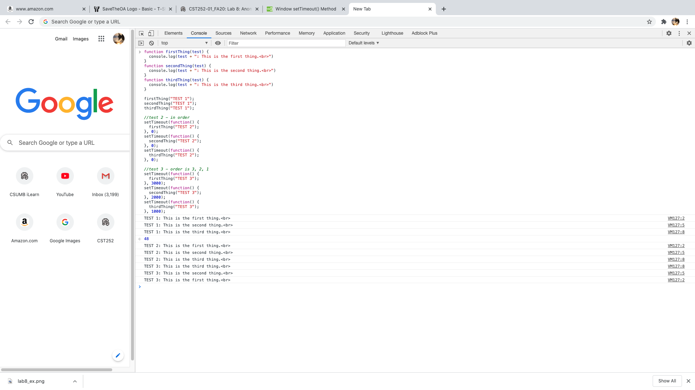

Lab 8: Anon Functions and Callbacks
Challenges
My only challenge was really conceptualizing the functions in this lab and getting my brain to understand them. Typing out the functions themselves is really easy and I really enjoy how simple and repetitive javascript functions like these are. It's really just getting my brain to understand each part that's the hard part, but that challenge feels similart to learning any other new second language.
Results
An html index, a function that can print tests at specific orders and times that indicate which function ran at the assigned time. I deviated from the directions a little bit to making the following order 3, 2, 1 instead of 2, 3, 1 so that my brain could understand manipulating the code a bit more.
Below is the first javascript task I coded in the console in the inspect tab.
This is the next step we coded, its the same coding as in the console, but its written out in Atom.